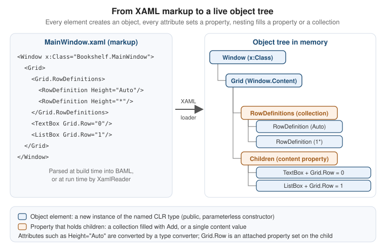

XAML Language Fundamentals
|
This content was generated with the assistance of AI and should be verified against the official documentation before being relied on in production; see the section bibliography for the reference material consulted while preparing these pages. |
XAML (Extensible Application Markup Language) is the declarative language that WPF, WinUI 3 and .NET MAUI use to describe
user interfaces. It is not a UI toolkit of its own: it is an XML-based syntax for creating objects and setting their
properties. Everything you can write in a .xaml file you can also write in C#, and the XAML parser’s job is to
produce exactly the object graph that the equivalent C# would build. Knowing that mental model is what makes the rest of
the section (data binding, resources, templates, MVVM) readable, because each of those features is "just" more objects
and more properties.
This page was written against the section baseline: .NET 10 LTS (latest patch 10.0.13, supported until
November 2028) with C# 14, Visual Studio 2026 (version 18.11.1), Windows App SDK 2.5.1 for the WinUI 3
comparisons and CommunityToolkit.Mvvm 8.4.2 for the view models. .NET 11 is at release candidate 2 and general
availability is expected at .NET Conf on 10-13 November 2026; nothing on this page depends on it. .NET 8 and .NET 9
reach end of support on 10 November 2026, so new work starts on .NET 10. The XAML language itself is stable and the
syntax shown here is the same on .NET Framework 4.8 and on .NET 8, 9 and 10. What changed is the project system
around it (SDK-style projects, new assembly names for clr-namespace: mappings, new designer and Hot Reload tooling),
and those differences get their own section below. WPF apps on .NET 10 run on the supported Windows 10 and Windows 11 releases listed in the .NET 10 support
policy; the XAML language does not change between them, only the default visual theme does.
The running scenario is Bookshelf Desktop, the Windows client of the Bookshelf domain used by the other sections of
this guide. This page builds its main window and details pane in WPF, and shows where WinUI 3 and Windows Forms differ.
The BooksViewModel, IBookRepository and IDialogService types that the markup binds to are defined by the MVVM
pages later in the section; only the parts needed to make the examples compile are shown here. To follow the C# side
of the examples, see Getting Started with C#.
The pages that follow in this section build on these foundations: Markup Extensions & Namescopes explains how
{Binding}, {StaticResource} and friends are evaluated and how to write your own; Resources & Resource Dictionaries covers the resource system that x:Key feeds; and XAML Dialects: WPF, WinUI & MAUI compares the three
XAML flavours in depth. This page stays on the language itself.
What XAML Really Is
A XAML file is an XML document in which element names are CLR type names and attribute names are CLR member names. A XAML processor (the build-time markup compiler, or the run-time loader) reads the document node by node and performs three operations:
-
an object element such as
<Button>creates an instance of the typeButtonthrough its public parameterless constructor; -
an attribute such as
Content="Save"sets a property (or attaches an event handler) on the object created by the element that owns it; -
nesting places the child objects into a property of the parent: a single content property, or a collection to which the parser calls
Add.
The figure shows this for a small fragment of the Bookshelf main window. The orange boxes are properties that hold children; the blue boxes are the objects the parser instantiates.

The same fragment written in C# makes the equivalence explicit. Both listings produce the same tree; the XAML version is shorter, can be edited by designers and tools, and can be reloaded by XAML Hot Reload while the app runs.
<Window x:Class="Bookshelf.Desktop.MainWindow"
xmlns="http://schemas.microsoft.com/winfx/2006/xaml/presentation"
xmlns:x="http://schemas.microsoft.com/winfx/2006/xaml"
Title="Bookshelf" Width="900" Height="560">
<Grid>
<Grid.RowDefinitions>
<RowDefinition Height="Auto"/>
<RowDefinition Height="*"/>
</Grid.RowDefinitions>
<TextBox Grid.Row="0" Margin="8"/>
<ListBox Grid.Row="1" Margin="8,0,8,8"/>
</Grid>
</Window>using System.Windows;
using System.Windows.Controls;
namespace Bookshelf.Desktop;
// What the XAML above amounts to, written by hand (for comparison only).
public sealed class MainWindowInCode : Window
{
public MainWindowInCode()
{
Title = "Bookshelf";
Width = 900;
Height = 560;
var grid = new Grid();
grid.RowDefinitions.Add(new RowDefinition { Height = GridLength.Auto });
grid.RowDefinitions.Add(new RowDefinition { Height = new GridLength(1, GridUnitType.Star) });
var search = new TextBox { Margin = new Thickness(8) };
Grid.SetRow(search, 0); // the attached property setter
grid.Children.Add(search);
var list = new ListBox { Margin = new Thickness(8, 0, 8, 8) };
Grid.SetRow(list, 1);
grid.Children.Add(list);
Content = grid; // Window's content property
}
}Source: XAML overview (WPF)
Three consequences follow from "XAML is object creation", and they explain most of the errors people hit:
-
A type used as an object element needs a public parameterless constructor (or, in XAML 2009 only,
x:Arguments; see the XAML 2006 versus 2009 section). -
A property set in markup needs a public setter, unless it is a collection or a dictionary (read-only collection properties are filled by calling
Add). -
Markup is case sensitive and resolved by reflection against the CLR types; there is no schema file, so the editor’s IntelliSense and the build are the only safety net before run time.
Object Elements, Attribute Syntax and Property Element Syntax
Object elements
An object element declares an instance of a CLR type. It is written as a start tag and end tag
(<Button></Button>), or as an empty-element tag (<Button/>). The element name is the type name; the namespace
prefix (declared with xmlns, see below) tells the parser which CLR namespaces and assemblies to search. A prefix-less
element uses the default namespace, which in WPF is the WPF presentation namespace.
Attribute syntax
The simplest way to set a property is an XML attribute whose name is the property name and whose value is a string. The parser converts that string to the type of the property (see the Type Converters section) or, when the value starts with an opening brace, evaluates it as a markup extension.
<TextBlock Text="Bookshelf"
FontSize="20"
FontWeight="SemiBold"
Foreground="DarkSlateBlue"
Margin="12,8"
ToolTip="The title of the current library"/>Each attribute above goes through a different conversion: FontSize is a double, FontWeight a struct converted
by FontWeightConverter, Foreground a Brush converted by BrushConverter, and Margin a Thickness converted
by ThicknessConverter ("12,8" means 12 left and right, 8 top and bottom). ToolTip is typed object, so the
string is kept as a string.
Property element syntax
Attribute syntax only works when the value can be written as a string. When a property’s value is a complex object,
use property element syntax: a child element named TypeName.PropertyName whose content is the value. The type
name is the type that declares the property, which can differ from the element’s own type for inherited properties.
Property element syntax can be nested without limit.
<Border CornerRadius="6" Padding="12" BorderThickness="1">
<Border.BorderBrush>
<SolidColorBrush Color="#FFB0B8C4"/>
</Border.BorderBrush>
<Border.Background>
<LinearGradientBrush StartPoint="0,0" EndPoint="0,1">
<GradientStop Color="#FFFDFDFE" Offset="0"/>
<GradientStop Color="#FFEDF1F7" Offset="1"/>
</LinearGradientBrush>
</Border.Background>
<TextBlock Text="Details"/>
</Border>Two details matter. First, property elements can appear in any order relative to each other and to attributes,
but the parser evaluates them in document order, so when one property’s value depends on another (rare), order is
observable. Second, a property cannot be set twice: using both Background="Red" and <Border.Background> on the same
element is an error. The last line of the example, the TextBlock, is not in a property element at all: Border has the
content property Child, so the nested object goes there implicitly.
| Form | Syntax | When to use it |
|---|---|---|
Attribute syntax |
|
The value converts from a string: numbers, enums, brushes, thicknesses, grid lengths, colours, geometries, and markup
extensions such as |
Property element syntax |
|
The value is an object that cannot be a string, or that needs its own attributes (a |
Content syntax |
|
The property is the type’s |
Markup extension syntax |
|
The value is computed at load time or tracked at run time (bindings, resource references, static members). |
Event attribute syntax |
|
The attribute name is an event; the value is the name of a handler method in the code-behind class. |
Markup text is XML text, so the usual XML rules apply. The five predefined entities escape the reserved characters:
& for an ampersand, < and > for the angle brackets, " for a quote. Numeric character
references such as insert a new line, and xml:space="preserve" on an element keeps its whitespace instead of normalising
it. WPF collapses runs of white space in text content to a single space and trims leading and trailing white space, so a
TextBlock whose text spans three lines in the file renders on one line unless you use <LineBreak/> or a character reference in an attribute value.
Content Properties and Collection Syntax
Content properties
Many controls have one property that you almost always set. The type declares it with
[ContentProperty("Name")] (the attribute is System.Windows.Markup.ContentPropertyAttribute, and it is inherited),
and the XAML processor then lets the nested content of the element go into that property without a property
element. That is why <Button>Save</Button> works, and why <Grid><TextBox/></Grid> does not need <Grid.Children>.
| Type | Content property | Effect in markup |
|---|---|---|
|
|
One child object; text becomes a string content. Setting two children is an error, because the property holds one value. |
|
|
Any number of |
|
|
Items added in order. It cannot be combined with |
|
|
One child element. |
|
|
|
|
|
|
|
(implicit dictionary add) |
Each child needs an |
Because content properties are a convention of the type, you cannot rely on them for a type you have not looked at;
the documentation of each class names its content property. WinUI 3 follows the same convention with the
ContentProperty attribute in the Microsoft.UI.Xaml.Markup namespace.
Collection syntax
When a property is a collection, the parser creates the collection if the property is read-only and null, then calls
Add for each child (or Add(key, value) for a dictionary, using x:Key). A property is treated as a collection if
its type implements IList (or the generic equivalent) or IDictionary, or implements the interface that legacy WPF
types use for adding children. You can write the collection property element explicitly or let the content property
do it:
<!-- Explicit: the property element names the collection and its contents are added one by one. -->
<ListBox x:Name="GenreFilter">
<ListBox.Items>
<ListBoxItem Content="Fantasy"/>
<ListBoxItem Content="Science fiction"/>
<ListBoxItem Content="History"/>
</ListBox.Items>
</ListBox>
<!-- Implicit: Items is the content property, so the property element can be omitted. -->
<ListBox x:Name="GenreFilterShort">
<ListBoxItem Content="Fantasy"/>
<ListBoxItem Content="Science fiction"/>
<ListBoxItem Content="History"/>
</ListBox>Collections of simple values need a way to write the items: map a CLR type such as sys:String with xmlns (see the
namespaces section), and use the x:Array markup extension when you need a typed array (covered in the x: directives
section). The built-in XAML types such as x:String belong to XAML 2009 and are covered in its section. For dictionaries
(ResourceDictionary, Style.Resources) every child must have x:Key, unless the type provides an implicit key.
Collection syntax is also where the logical tree gets built: every child added to Children or Items becomes a
logical child of its parent, which is why resources, DataContext and inherited properties (such as FontSize) flow
down through the markup structure. The logical and visual trees are explained on WPF Architecture & Application Model.
Source: XAML syntax in detail
Attached Property Syntax
Some properties make sense only on a child, but are owned by the parent: which row of the grid am I in?, which
edge of the dock panel do I attach to? Attached properties solve that. They are declared on the owning type and
set on any DependencyObject. In markup they are written OwnerType.PropertyName as an attribute on the child:
<DockPanel LastChildFill="True">
<TextBox DockPanel.Dock="Top"
AutomationProperties.Name="Search books"
ToolTipService.ToolTip="Type part of a title or an author"/>
<StatusBar DockPanel.Dock="Bottom"/>
<ListBox/>
</DockPanel>DockPanel.Dock is read by the DockPanel during layout. AutomationProperties.Name is read by UI Automation (the
screen reader hears "Search books" instead of nothing), and ToolTipService.ToolTip is read by the tool tip service.
The parser handles an attached property by looking for the static pair SetName(DependencyObject, value) and
GetName(DependencyObject) on the owner type, with a NameProperty dependency property behind them. In C# you call
the same setter yourself, as the Grid.SetRow calls in the first example do.
Attached properties are the mechanism behind several concepts that look unrelated: layout positioning (Grid.Row,
Canvas.Left), accessibility (AutomationProperties.*), validation (Validation.ErrorTemplate), keyboard navigation
(KeyboardNavigation.TabNavigation) and attached events (<StackPanel Button.Click="OnAnyButtonClick"> handles
Click raised by any button inside the panel). The WPF Dependency Properties page, later in the WPF part of the
section, explains how they are registered. WinUI 3 has the same syntax (Grid.Row, Canvas.Left,
ToolTipService.ToolTip), and Windows Forms has no equivalent: the designer-generated code puts
children into TableLayoutPanel cells with Controls.Add(control, column, row) calls in the .Designer.cs file.
Source: XAML syntax in detail
Type Converters
Attribute values are strings, but properties are typed. The bridge is the type converter: a class derived from
System.ComponentModel.TypeConverter that knows how to turn a string into an instance of a type (and back). When the
parser meets Margin="12,8", it looks for a converter in this order:
-
a
TypeConverterAttributeon the property being set (rare in the framework’s own properties, but available to a property that needs a conversion different from its type’s); -
a
TypeConverterAttributeon the type of the property (Thicknesscarries one,ThicknessConverter, which is howMargin="12,8"converts, and any other property of that type converts the same way); -
for enumerations, the built-in enum conversion (
Visibility="Collapsed"); for primitives, the standard converters.
If none applies, the parser reports an error such as "'x' is not a valid value for property 'y'", naming the property and the line of the markup. The converters are why WPF markup reads like a configuration file rather than code.
| Target type | Examples in markup | Converter notes |
|---|---|---|
|
|
One, two (horizontal, vertical) or four (left, top, right, bottom) numbers. |
|
|
One value or four values. |
|
|
Pixels (device-independent), |
|
|
Named colours, |
|
|
Used by |
|
|
A comma-separated fallback list. |
|
|
Comma or space separated numbers. |
|
|
Hours, minutes and seconds. |
|
|
The path mini-language. |
|
|
Used by |
|
|
Relative URIs are resolved against the XAML file or the application (pack URIs are covered on the resources page). |
Enumerations |
|
Member names, case sensitive. Flag enumerations accept a comma-separated list. |
A custom type converter for the Bookshelf ISBN
The Bookshelf domain uses a value type for ISBN-13 numbers, so a book can never carry a malformed identifier. To let
people write Isbn="978-0-306-40615-7" in markup (for design-time sample data, for resources, or in a configuration
file loaded at run time), the type declares a converter. Decorating the type with
[TypeConverter(typeof(IsbnConverter))] makes every property of type Isbn accept strings, without any change to the
properties themselves. (Attributes are explained on
Attributes and Reflection.)
using System.ComponentModel;
using System.Globalization;
namespace Bookshelf.Core;
/// <summary>A validated ISBN-13, stored as 13 digits without hyphens.</summary>
[TypeConverter(typeof(IsbnConverter))]
public readonly record struct Isbn
{
private readonly string? _digits;
public Isbn(string text)
{
ArgumentNullException.ThrowIfNull(text);
var digits = new string(text.Where(char.IsAsciiDigit).ToArray());
if (digits.Length != 13)
{
throw new FormatException($"An ISBN-13 has 13 digits, but \"{text}\" has {digits.Length}.");
}
_digits = digits;
}
public string Digits => _digits ?? string.Empty;
public override string ToString() => Digits;
}
/// <summary>Lets XAML (and other TypeDescriptor consumers) convert text to and from <see cref="Isbn"/>.</summary>
public sealed class IsbnConverter : TypeConverter
{
public override bool CanConvertFrom(ITypeDescriptorContext? context, Type sourceType) =>
sourceType == typeof(string) || base.CanConvertFrom(context, sourceType);
public override object? ConvertFrom(ITypeDescriptorContext? context, CultureInfo? culture, object value) =>
value is string text ? new Isbn(text) : base.ConvertFrom(context, culture, value);
public override bool CanConvertTo(ITypeDescriptorContext? context, Type? destinationType) =>
destinationType == typeof(string) || base.CanConvertTo(context, destinationType);
public override object? ConvertTo(
ITypeDescriptorContext? context, CultureInfo? culture, object? value, Type destinationType) =>
destinationType == typeof(string) && value is Isbn isbn
? isbn.ToString()
: base.ConvertTo(context, culture, value, destinationType);
}<!-- Resources/SampleBooks.xaml: sample data authored by hand, converted by IsbnConverter. -->
<ResourceDictionary xmlns="http://schemas.microsoft.com/winfx/2006/xaml/presentation"
xmlns:x="http://schemas.microsoft.com/winfx/2006/xaml"
xmlns:vm="clr-namespace:Bookshelf.Desktop.ViewModels">
<vm:BookViewModel x:Key="SampleDune"
Title="Dune"
Author="Frank Herbert"
Isbn="978-0-306-40615-7"
Year="1965"/>
</ResourceDictionary>A few rules apply to converters you write yourself:
-
ConvertFromreceives the string exactly as written, after XML whitespace normalisation, and thecultureparameter is the invariant culture for markup, so parse numbers and dates withCultureInfo.InvariantCulture. Localised formats belong in value converters used by bindings (covered on the data binding page), not in XAML type converters. -
Throw
FormatException(orArgumentException) for bad input. The XAML parser wraps the exception in an error that includes the file, line and property, which is exactly what the person editing the markup needs. -
CanConvertToandConvertTomatter when a tool serialises objects back to XAML or displays them in a property grid; hand-written markup needs onlyCanConvertFromandConvertFrom. -
A converter must be public with a public parameterless constructor, as it is created through reflection.
-
When you can change the type, put the attribute on the type. Put it on the property (
[TypeConverter(...)]) only when you must influence a type you do not own, such asstring.
Source: TypeConverters and XAML
WinUI 3 has its own conversion rules for the built-in types. The custom TypeConverter pattern above is documented for
WPF and System.Xaml; the official WinUI pages used for this section do not describe an equivalent extension point
for your own types, so in WinUI 3 prefer a value converter in the binding or a markup extension. Windows Forms has no
markup and therefore no equivalent; the designer serialises values as C# in the .Designer.cs file.
XML Namespaces and the clr-namespace Mapping
Because element names are CLR type names, the parser needs to know which CLR namespace and assembly a name belongs
to. XAML does that with XML namespaces. A xmlns attribute either declares a namespace URI or a
CLR namespace mapping.
The well-known namespaces
| Prefix | Namespace | Purpose |
|---|---|---|
(default) |
|
The WPF types: |
|
|
The XAML language: |
|
|
Markup compatibility: |
|
|
Design-time attributes read by the Visual Studio and Blend designers. |
|
|
Your own types, mapped with a CLR namespace string. The prefix names are conventions. |
clr-namespace and assembly
To use your own types, or types from another assembly, map a CLR namespace to a prefix. The attribute value has the
form clr-namespace: namespace optionally followed by ;assembly= assembly name:
<Window xmlns="http://schemas.microsoft.com/winfx/2006/xaml/presentation"
xmlns:x="http://schemas.microsoft.com/winfx/2006/xaml"
xmlns:local="clr-namespace:Bookshelf.Desktop"
xmlns:vm="clr-namespace:Bookshelf.Desktop.ViewModels"
xmlns:core="clr-namespace:Bookshelf.Core;assembly=Bookshelf.Core"
xmlns:sys="clr-namespace:System;assembly=System.Runtime">
<Window.Resources>
<sys:String x:Key="AppName">Bookshelf Desktop</sys:String>
<core:Isbn x:Key="Example">978-0-306-40615-7</core:Isbn>
</Window.Resources>
</Window>The rules, as the XAML namespace documentation states them:
-
the assembly part is the file name without extension (
Bookshelf.Core, notBookshelf.Core.dll), and it must not be given when the type lives in the assembly that contains the markup; -
the assembly must be referenced by the project; in compiled XAML, a typo shows up as a build error "The type 'x' was not found", while in loose XAML it is a run-time exception;
-
the type you instantiate must be public (for a different assembly), and the mapping is by CLR namespace, never by type: there is no way to alias a single class;
-
an
xmlnsattribute can appear on any element, applies to its subtree, and a prefix can be redefined further down.
On .NET Framework the assembly= value for the base library was mscorlib. On .NET (5 and later) the base types live
in System.Private.CoreLib, exposed through reference assemblies such as System.Runtime; the form
assembly=System.Runtime used above is the one the .NET SDK templates and community samples use, and mscorlib
continues to resolve through a compatibility facade.
One namespace for a whole library: XmlnsDefinition
A control library with a dozen namespaces forces every consumer to write a dozen xmlns lines. WPF lets the library
publish one URI that stands for several CLR namespaces, using assembly-level attributes. Consumers write a single
mapping with a short prefix.
using System.Windows.Markup;
// In any .cs file of the Bookshelf.Controls assembly (for example Properties/AssemblyInfo.cs).
[assembly: XmlnsDefinition("urn:bookshelf:controls", "Bookshelf.Controls")]
[assembly: XmlnsDefinition("urn:bookshelf:controls", "Bookshelf.Controls.Primitives")]
[assembly: XmlnsPrefix("urn:bookshelf:controls", "bs")]<Window xmlns="http://schemas.microsoft.com/winfx/2006/xaml/presentation"
xmlns:x="http://schemas.microsoft.com/winfx/2006/xaml"
xmlns:bs="urn:bookshelf:controls">
<bs:RatingBar Value="4"/>
</Window>The URI string is arbitrary but should be stable and unique; Microsoft’s own libraries use http://schemas... strings
for the same reason. XmlnsPrefixAttribute suggests the prefix that the designer writes when you drag the control
onto a surface.
Cross-stack namespace syntax
| Aspect | WPF | WinUI 3 | Windows Forms |
|---|---|---|---|
Default namespace |
|
The same URI, which maps to the |
Not applicable (no markup) |
Own CLR namespace |
|
|
|
Another assembly |
|
|
Project reference plus |
One URI for many namespaces |
|
Not covered by the official WinUI pages used here; map each namespace with |
Not applicable |
The x: Directives
The x prefix does not name types of the WPF presentation framework: it names language-level features of XAML
itself, which any XAML implementation provides. Some are attributes (directives such as x:Name), some are markup
extensions ({x:Static}). They are defined by the XAML language and implemented in System.Xaml for WPF.
| Directive | What it does | Notes |
|---|---|---|
|
Names the CLR class that the markup defines, as |
Allowed only on the root element of a compiled XAML file; the base class is the root element’s type. |
|
Sets the visibility of the generated class ( |
Written in the language of the project (C# keywords for C#). |
|
Gives the object an identifier that is unique in its namescope. In compiled XAML it also creates a field in the generated partial class. |
WPF maps the |
|
Sets the visibility of the field generated for |
The default is |
|
Gives a dictionary key to an element that is a child of a |
Styles and data templates that declare |
|
In a resource dictionary, set to |
Useful for brushes or shapes that are animated or modified independently. |
|
Identifies an element for localisation tooling. |
WPF localisation tools use it as the resource id; WinUI 3 uses |
|
Evaluates to a static field, property, constant or enum member: |
Resolved when the XAML is loaded, so it is a snapshot, not a live reference. |
|
Evaluates to a |
Required by properties typed |
|
Evaluates to |
|
|
Creates a typed array; the |
Items are object elements inside the array element. |
|
Marks an inline island of XML (for an |
Rarely needed in MVVM code, which binds to objects. |
The code below is a resource dictionary for Bookshelf Desktop that uses the directives that matter most in practice:
x:Key for the brushes and styles, x:Static for a constant and a system brush key, x:Type for a data template,
x:Null to remove an inherited value, and x:Array for the genre list.
namespace Bookshelf.Core;
public static class Limits
{
public const int MaxTitleLength = 200;
}<ResourceDictionary xmlns="http://schemas.microsoft.com/winfx/2006/xaml/presentation"
xmlns:x="http://schemas.microsoft.com/winfx/2006/xaml"
xmlns:core="clr-namespace:Bookshelf.Core;assembly=Bookshelf.Core"
xmlns:vm="clr-namespace:Bookshelf.Desktop.ViewModels"
xmlns:sys="clr-namespace:System;assembly=System.Runtime">
<!-- x:Key: shared brush, created once -->
<SolidColorBrush x:Key="AccentBrush" Color="#FF3B5BA5"/>
<!-- x:Shared="False": each lookup produces its own instance -->
<SolidColorBrush x:Key="BadgeBrush" x:Shared="False" Color="#FFB3541E"/>
<!-- x:Array: a typed array of strings, used as an ItemsSource -->
<x:Array x:Key="Genres" Type="sys:String">
<sys:String>Fantasy</sys:String>
<sys:String>Science fiction</sys:String>
<sys:String>History</sys:String>
</x:Array>
<!-- x:Static as a value, and as a resource key (system brush keys follow the user theme) -->
<Style x:Key="TitleBox" TargetType="TextBox">
<Setter Property="MaxLength" Value="{x:Static core:Limits.MaxTitleLength}"/>
<Setter Property="Foreground" Value="{DynamicResource {x:Static SystemColors.WindowTextBrushKey}}"/>
<Setter Property="Background" Value="{x:Null}"/>
</Style>
<!-- x:Type: DataType is typed object, so the type must be written explicitly -->
<DataTemplate DataType="{x:Type vm:BookViewModel}">
<StackPanel Orientation="Horizontal">
<TextBlock Text="{Binding Title}" FontWeight="SemiBold"/>
<TextBlock Text="{Binding Author}" Margin="8,0,0,0" Foreground="{StaticResource AccentBrush}"/>
</StackPanel>
</DataTemplate>
</ResourceDictionary>Source: XAML syntax in detail
Source: XAML namespace language features
x:Name, Name and namescopes
x:Name is the language-level way to name an element so that code can reach it. In the Bookshelf main window the
search box is declared with x:Name="SearchBox", and the generated partial class gets a field of that name, which the
Loaded handler uses to give the box keyboard focus. Names must be unique inside a namescope: the root element
of a XAML page, plus every ControlTemplate, DataTemplate and Style template body, each define their own. That is
why a name declared inside a template does not generate a field in the window class, and has to be found with
FindName or GetTemplateChild instead. Markup Extensions & Namescopes, the page that follows this one, covers
namescopes in templates and styles in detail.
Names must start with a letter or an underscore and may contain letters, digits and underscores. Use names for the few elements that code-behind really needs (focus, scrolling, animation targets); with MVVM, state belongs in the view model and bindings, so most elements need no name at all.
mc:Ignorable and d: Design-Time Data
Visual Studio’s designer wants information that the running app must never see: how big the design surface should be,
what sample data to display, which type the bindings target. XAML carries it in attributes from the design
namespace, d, and uses the markup-compatibility namespace, mc, to tell the real XAML parser to skip them.
<Window xmlns="http://schemas.microsoft.com/winfx/2006/xaml/presentation"
xmlns:x="http://schemas.microsoft.com/winfx/2006/xaml"
xmlns:mc="http://schemas.openxmlformats.org/markup-compatibility/2006"
xmlns:d="http://schemas.microsoft.com/expression/blend/2008"
mc:Ignorable="d"
d:DesignWidth="900" d:DesignHeight="560">mc:Ignorable="d" lists the prefixes whose elements and attributes the processor must ignore if it does not
understand them. A runtime parser has no idea what d:DesignWidth means, so it skips it; the designer does understand
it, so it uses it. Several prefixes are separated by spaces. If you declare d and use d: attributes but forget
mc:Ignorable="d", the build or load fails with an error about an unknown member DesignWidth.
The most useful d: features:
| Attribute | Effect in the designer |
|---|---|
|
The size of the design surface for a root element that has no explicit |
|
The |
|
Tells the designer the type of the data context. With |
|
Loads design-time data from a XAML file that describes sample objects. |
|
Visual Studio’s designer can generate placeholder items for list controls. It is a designer feature rather than a language feature, and its behaviour is determined by the designer version. |
The pattern that works best with MVVM is a small class in the application project that exposes the same property names
as the real view model but holds fixed sample data and needs no services. The real BooksViewModel takes an
IBookRepository and an IDialogService, so it cannot be created without a host; the design-time class does not
depend on either.
using Bookshelf.Core;
using Bookshelf.Desktop.ViewModels;
namespace Bookshelf.Desktop.DesignData;
/// <summary>Sample data shown by the XAML designer only. It never runs in the deployed app.</summary>
public sealed class DesignBooksViewModel
{
public string SearchText { get; set; } = "dune";
public IReadOnlyList<BookViewModel> Books { get; } =
[
new() { Id = 1, Title = "Dune", Author = "Frank Herbert", Isbn = new Isbn("978-0-306-40615-7"), Year = 1965 },
new() { Id = 2, Title = "Hyperion", Author = "Dan Simmons", Isbn = new Isbn("978-0-553-28368-5"), Year = 1989 },
new() { Id = 3, Title = "The Dispossessed", Author = "Ursula K. Le Guin", Isbn = new Isbn("978-0-06-051275-5"), Year = 1974 },
];
public BookViewModel SelectedBook => Books[0];
}The designer instantiates that class on the design surface, and the {Binding ...} expressions in the window resolve
against it. At run time the d:DataContext attribute is ignored and the real DataContext set in code-behind (or by
the host) wins. Note that a binding that names a property missing from the real view model is still a run-time
binding error (it logs a trace message and displays nothing); the design-time class only makes such mistakes visible
earlier, so keep it in step with the view model, for example by implementing the same interface on both.
WinUI 3 project templates declare the same mc and d namespaces with mc:Ignorable="d", so the same pattern
applies there. Windows Forms has no design-time data in markup: the designer instantiates the real controls.
The Bookshelf Main Window and Details Pane
The pieces now fit together. The main window below is the real entry screen of Bookshelf Desktop: a search box, a book
list, a splitter, and a details pane. It uses object elements and attributes, property elements (Grid.RowDefinitions,
ListView.View, GroupBox.Header, Window.InputBindings), content properties (Children, Items), attached
properties (Grid.Row, Grid.Column, AutomationProperties.Name), type conversion (Width="2*",
Gesture="Ctrl+N"), x:Name, x:Class, an event attribute and the design-time attributes from the previous section.
The bindings use {Binding} because WPF has no compiled {x:Bind}; the next page in the section explains how
binding expressions are evaluated.
<Window x:Class="Bookshelf.Desktop.MainWindow"
xmlns="http://schemas.microsoft.com/winfx/2006/xaml/presentation"
xmlns:x="http://schemas.microsoft.com/winfx/2006/xaml"
xmlns:mc="http://schemas.openxmlformats.org/markup-compatibility/2006"
xmlns:d="http://schemas.microsoft.com/expression/blend/2008"
xmlns:design="clr-namespace:Bookshelf.Desktop.DesignData"
mc:Ignorable="d"
d:DataContext="{d:DesignInstance Type=design:DesignBooksViewModel, IsDesignTimeCreatable=True}"
d:DesignWidth="900" d:DesignHeight="560"
Title="Bookshelf" Width="900" Height="560" MinWidth="640" MinHeight="400"
Loaded="OnLoaded">
<Window.Resources>
<SolidColorBrush x:Key="AccentBrush" Color="#FF3B5BA5"/>
<Style x:Key="FieldLabel" TargetType="TextBlock">
<Setter Property="Margin" Value="0,0,8,0"/>
<Setter Property="VerticalAlignment" Value="Center"/>
<Setter Property="Foreground" Value="{StaticResource AccentBrush}"/>
</Style>
</Window.Resources>
<Window.InputBindings>
<KeyBinding Gesture="Ctrl+N" Command="{Binding AddBookCommand}"/>
</Window.InputBindings>
<Grid Margin="12">
<Grid.ColumnDefinitions>
<ColumnDefinition Width="2*" MinWidth="280"/>
<ColumnDefinition Width="Auto"/>
<ColumnDefinition Width="*" MinWidth="240"/>
</Grid.ColumnDefinitions>
<Grid.RowDefinitions>
<RowDefinition Height="Auto"/>
<RowDefinition Height="*"/>
</Grid.RowDefinitions>
<!-- Search box: x:Name creates the SearchBox field used by OnLoaded. -->
<TextBox x:Name="SearchBox" Grid.Row="0" Grid.Column="0" Margin="0,0,0,8"
AutomationProperties.Name="Search books"
Text="{Binding SearchText, UpdateSourceTrigger=PropertyChanged}"/>
<!-- Book list: GridView is the content of the ListView.View property element. -->
<ListView Grid.Row="1" Grid.Column="0"
AutomationProperties.Name="Books"
ItemsSource="{Binding Books}"
SelectedItem="{Binding SelectedBook}">
<ListView.View>
<GridView>
<GridViewColumn Header="Title" Width="220" DisplayMemberBinding="{Binding Title}"/>
<GridViewColumn Header="Author" Width="140" DisplayMemberBinding="{Binding Author}"/>
<GridViewColumn Header="Year" Width="60" DisplayMemberBinding="{Binding Year}"/>
</GridView>
</ListView.View>
</ListView>
<GridSplitter Grid.Row="0" Grid.RowSpan="2" Grid.Column="1" Width="6"
HorizontalAlignment="Center" VerticalAlignment="Stretch"
ShowsPreview="False" AutomationProperties.Name="Resize details pane"/>
<!-- Details pane: the header is a property element because it holds an object, not a string. -->
<GroupBox Grid.Row="0" Grid.RowSpan="2" Grid.Column="2" Margin="6,0,0,0">
<GroupBox.Header>
<TextBlock Text="Details" FontWeight="SemiBold"/>
</GroupBox.Header>
<Grid Margin="4">
<Grid.ColumnDefinitions>
<ColumnDefinition Width="Auto"/>
<ColumnDefinition Width="*"/>
</Grid.ColumnDefinitions>
<Grid.RowDefinitions>
<RowDefinition Height="Auto"/>
<RowDefinition Height="Auto"/>
<RowDefinition Height="Auto"/>
<RowDefinition Height="Auto"/>
<RowDefinition Height="*"/>
</Grid.RowDefinitions>
<TextBlock Grid.Row="0" Grid.Column="0" Text="Title" Style="{StaticResource FieldLabel}"/>
<TextBox Grid.Row="0" Grid.Column="1" Margin="0,2"
AutomationProperties.Name="Title"
Text="{Binding SelectedBook.Title, UpdateSourceTrigger=LostFocus}"/>
<TextBlock Grid.Row="1" Grid.Column="0" Text="Author" Style="{StaticResource FieldLabel}"/>
<TextBox Grid.Row="1" Grid.Column="1" Margin="0,2"
AutomationProperties.Name="Author"
Text="{Binding SelectedBook.Author, UpdateSourceTrigger=LostFocus}"/>
<TextBlock Grid.Row="2" Grid.Column="0" Text="ISBN" Style="{StaticResource FieldLabel}"/>
<TextBlock Grid.Row="2" Grid.Column="1" Margin="0,2"
Text="{Binding SelectedBook.Isbn}"/>
<TextBlock Grid.Row="3" Grid.Column="0" Text="Year" Style="{StaticResource FieldLabel}"/>
<TextBlock Grid.Row="3" Grid.Column="1" Margin="0,2"
Text="{Binding SelectedBook.Year}"/>
<StackPanel Grid.Row="4" Grid.ColumnSpan="2" Orientation="Horizontal"
VerticalAlignment="Bottom" HorizontalAlignment="Right">
<Button Content="_Add" Command="{Binding AddBookCommand}" Margin="0,0,6,0" MinWidth="72"/>
<Button Content="_Delete" Command="{Binding DeleteBookCommand}" MinWidth="72"/>
</StackPanel>
</Grid>
</GroupBox>
</Grid>
</Window>Source: XAML syntax in detail
The code-behind file is deliberately tiny: it constructs the window with its view model (the Generic Host supplies it
through dependency injection, covered on the DI pages), calls InitializeComponent, and wires the one event handler
the markup declared.
using System.Windows;
using Bookshelf.Desktop.ViewModels;
namespace Bookshelf.Desktop;
public partial class MainWindow : Window
{
private readonly BooksViewModel _viewModel;
public MainWindow(BooksViewModel viewModel)
{
InitializeComponent(); // builds the object tree from the compiled markup
_viewModel = viewModel;
DataContext = viewModel; // wins over the design-time d:DataContext
}
// Declared in XAML as Loaded="OnLoaded". The SearchBox field is generated from x:Name.
private async void OnLoaded(object sender, RoutedEventArgs e)
{
SearchBox.Focus();
await _viewModel.LoadCommand.ExecuteAsync(null);
}
}The view model the markup binds to follows the section’s MVVM Toolkit conventions (partial properties, source-generated
commands). It is reproduced only far enough to make the example compile; the MVVM pages explain it in full. Its
BookViewModel is a reduced stand-in with settable properties and a parameterless constructor, so that the sample
data above can create it in markup, rather than the BookViewModel(Book book) wrapper of the MVVM pages.
using System.Collections.ObjectModel;
using Bookshelf.Core;
using CommunityToolkit.Mvvm.ComponentModel;
using CommunityToolkit.Mvvm.Input;
namespace Bookshelf.Desktop.ViewModels;
public sealed partial class BookViewModel : ObservableObject
{
public int Id { get; init; }
[ObservableProperty]
public partial string? Title { get; set; }
[ObservableProperty]
public partial string? Author { get; set; }
[ObservableProperty]
public partial Isbn Isbn { get; set; }
[ObservableProperty]
public partial int Year { get; set; }
}
public sealed partial class BooksViewModel(IBookRepository repository, IDialogService dialogs) : ObservableObject
{
private List<BookViewModel> _all = [];
public ObservableCollection<BookViewModel> Books { get; } = [];
[ObservableProperty]
public partial string? SearchText { get; set; }
[ObservableProperty]
[NotifyCanExecuteChangedFor(nameof(DeleteBookCommand))]
public partial BookViewModel? SelectedBook { get; set; }
partial void OnSearchTextChanged(string? value) => ApplyFilter();
[RelayCommand]
private async Task LoadAsync(CancellationToken cancellationToken)
{
var books = await repository.GetAllAsync(cancellationToken);
_all = books.Select(b => new BookViewModel
{
Id = b.Id, Title = b.Title, Author = b.Author, Year = b.Year,
Isbn = b.Isbn is { } isbn ? new Isbn(isbn) : default, // Book stores the ISBN as text
}).ToList();
ApplyFilter();
}
[RelayCommand]
private async Task AddBookAsync()
{
if (await dialogs.EditBookAsync(null) is { } created)
{
await LoadAsync(CancellationToken.None);
SelectedBook = Books.FirstOrDefault(b => b.Id == created.Id);
}
}
[RelayCommand(CanExecute = nameof(CanDeleteBook))]
private async Task DeleteBookAsync()
{
if (SelectedBook is not { } book
|| !await dialogs.ConfirmAsync("Delete book", $"Delete \"{book.Title}\"?"))
{
return;
}
await repository.DeleteAsync(book.Id, CancellationToken.None);
_all.Remove(book);
ApplyFilter();
}
private bool CanDeleteBook() => SelectedBook is not null;
private void ApplyFilter()
{
var text = SearchText?.Trim();
var matches = string.IsNullOrEmpty(text)
? _all
: _all.Where(b => (b.Title?.Contains(text, StringComparison.CurrentCultureIgnoreCase) ?? false)
|| (b.Author?.Contains(text, StringComparison.CurrentCultureIgnoreCase) ?? false)).ToList();
Books.Clear();
foreach (var book in matches)
{
Books.Add(book);
}
}
}
public interface IBookRepository
{
Task<IReadOnlyList<Book>> GetAllAsync(CancellationToken cancellationToken = default);
Task DeleteAsync(int id, CancellationToken cancellationToken = default);
}
public interface IDialogService
{
Task<bool> ConfirmAsync(string title, string message);
Task<Book?> EditBookAsync(Book? existing);
}Source: ObservableProperty attribute
The Book record used by the repository is a plain domain type in Bookshelf.Core
(public sealed record Book(int Id, string Title, string Author, int Year = 0, decimal Price = 0m, string? Isbn = null)); it has no parameterless
constructor on purpose, which is why the window binds to the BookViewModel wrapper rather than to Book itself. The
IBookRepository and IDialogService interfaces are abbreviated here to the members this page needs. As the toolkit
documentation states, partial-property syntax is the form to use with C# 14; the ObservableProperty page of the
official toolkit docs still shows field-based examples, so the release notes of the toolkit are the reference for the
partial-property form.
Code-Behind, x:Class and InitializeComponent
A XAML file with an x:Class attribute is half of a class. The other half is the code-behind file, and the build
joins them because both declare the same partial class. The rules:
-
the root element’s type is the base class:
<Window x:Class="Bookshelf.Desktop.MainWindow">generatespartial class MainWindow : Window, so the code-behind declarationpublic partial class MainWindow : Windowmust name the same base (or omit it, as long as one part names it); -
the namespace and class name in
x:Classmust match the code-behind exactly (case sensitive); -
the constructor you write must call
InitializeComponent()(directly or through another constructor); without it the window is created empty, because the object tree has not been built; -
event attributes in markup (
Loaded="OnLoaded") name instance methods of that class with the signature of the event’s delegate; a missing or mismatched method is a build error; -
each
x:Namebecomes aninternalfield of the class (x:FieldModifierchanges that), assigned duringInitializeComponent, so it is not usable before that call.
The markup compiler writes the generated half into the obj folder as MainWindow.g.cs (and a MainWindow.g.i.cs
for the design-time build that powers IntelliSense). A shortened, illustrative form of the generated code is:
// obj/Debug/net10.0-windows/MainWindow.g.cs (generated; shortened for illustration)
public partial class MainWindow : System.Windows.Window, System.Windows.Markup.IComponentConnector
{
internal System.Windows.Controls.TextBox SearchBox; // from x:Name
private bool _contentLoaded;
public void InitializeComponent()
{
if (_contentLoaded) { return; }
_contentLoaded = true;
var resourceLocater = new System.Uri("/Bookshelf.Desktop;component/mainwindow.xaml", System.UriKind.Relative);
System.Windows.Application.LoadComponent(this, resourceLocater);
}
void System.Windows.Markup.IComponentConnector.Connect(int connectionId, object target)
{
switch (connectionId)
{
case 1: ((MainWindow)target).Loaded += OnLoaded; return; // Loaded="OnLoaded"
case 2: SearchBox = (System.Windows.Controls.TextBox)target; return; // x:Name
}
_contentLoaded = true;
}
}You never edit that file: it is regenerated on every build, and the code shown is an illustration of the shape (the exact
output varies between SDK versions). What matters is the flow. InitializeComponent asks Application.LoadComponent
to load the compiled markup identified by a relative pack URI (/AssemblyName;component/path.xaml). The loader
creates the objects, sets their properties and, for every element that needs the code-behind (a named element or an
event), calls back IComponentConnector.Connect with the connection id the compiler assigned, so the generated code
can assign the field or attach the handler.
Source: Code-behind and XAML in WPF
Practical guidelines for code-behind, in the MVVM style this section follows:
-
keep it for view-only concerns that cannot be expressed in markup: moving focus, scrolling an item into view, calling a control method, window-specific wiring such as dialogs owned by a window;
-
do not put business logic or data access there; it cannot be unit tested without a UI thread;
-
set the
DataContextfrom the outside (the host creates the window with its view model, as above), not by creating services inside the window; -
avoid heavy work between constructor and
InitializeComponent, because a slow constructor delays the first frame; -
when a type has multiple constructors, make sure every one reaches
InitializeComponentexactly once. Calling it twice is harmless thanks to the_contentLoadedguard in the generated method, but creating the tree twice bynew-ing the control manually is not.
BAML: What the Build Does with XAML
Parsing XML at every start-up would be slow and would ship readable UI definitions in clear text. WPF therefore
compiles XAML at build time into a binary form called BAML (Binary Application Markup Language). This is the
role of the WPF markup compiler, which runs as MSBuild targets of the .NET SDK’s WPF support (the targets are named
MarkupCompilePass1 and MarkupCompilePass2).
The build proceeds in two passes because the markup can use types defined in the same project (vm:BookViewModel,
design:DesignBooksViewModel) that do not exist until the C# compiler has run. Pass 1 parses what it can and generates
the code-behind half; the project compiles; pass 2 resolves the markup that referred to local types. The output is one
.baml file per XAML page, packed into the assembly resources (<Assembly>.g.resources).
| Item | Where | Role |
|---|---|---|
|
Project folder; build action |
The source. In an SDK-style WPF project every |
|
|
The generated partial class ( |
|
|
The tokenised markup: type, property and value records instead of XML text. |
|
|
The resource stream that holds all BAML files; read through the pack URI |
Loose |
Copied to the output folder |
Not compiled. Loaded with |
Facts and consequences worth knowing:
-
BAML loads faster than parsing XAML text and it is smaller, but the format is an implementation detail of the WPF build: the official documentation tells you that XAML is compiled to BAML and how to load it, but does not publish a specification of the binary format. Do not parse BAML yourself; reading it back is for decompilers and diagnostic tools, which are third-party.
-
A markup error in a compiled page is reported at build time with the file and line (an unknown type, a property that does not exist, an event handler that is missing). A malformed binding path is not: it is resolved at run time.
-
Compiled markup is part of the assembly; installing the app installs the UI. Loose
.xamlfiles are separate files on disk that anybody with write access to the install folder can change, which matters for the security section below. -
XAML Hot Reload (Visual Studio 2026) applies XAML edits to the running process without a rebuild, by re-applying the changed markup to the live tree. Code-behind and view model changes go through the .NET Hot Reload path instead, and some edits (a new
x:Class, new types) still require a rebuild. -
No ahead-of-time compilation or trimming: WPF and Windows Forms apps do not support Native AOT or trimming in .NET 10, and the XAML-by-reflection model (types resolved by name through
clr-namespace) is the main reason. WinUI apps compile their XAML into XBF files and generated code, and their AOT story is documented only in release notes.
Source: Code-behind and XAML in WPF
Source: XAML Hot Reload
A minimal project file for the Bookshelf main window shows the properties involved. UseWPF is what pulls in the WPF
markup compiler and the XAML globbing; the Content item at the end illustrates a loose XAML file that is
deliberately excluded from compilation (used in the run-time loading section).
<Project Sdk="Microsoft.NET.Sdk">
<PropertyGroup>
<OutputType>WinExe</OutputType>
<TargetFramework>net10.0-windows</TargetFramework>
<Nullable>enable</Nullable>
<ImplicitUsings>enable</ImplicitUsings>
<UseWPF>true</UseWPF>
</PropertyGroup>
<ItemGroup>
<PackageReference Include="CommunityToolkit.Mvvm" Version="8.4.2" />
<ProjectReference Include="..\Bookshelf.Core\Bookshelf.Core.csproj" />
</ItemGroup>
<ItemGroup>
<!-- Loose XAML: copied next to the executable instead of being compiled to BAML. -->
<Page Remove="Templates\*.xaml" />
<Content Include="Templates\*.xaml" CopyToOutputDirectory="PreserveNewest" />
</ItemGroup>
</Project>Source: XAML overview (WPF)
XAML 2006 versus XAML 2009
There are two versions of the XAML language specification, recognised by the way the parser treats the x namespace.
XAML 2006 is what WPF markup, and everything in this page up to here, uses. XAML 2009 extends the language
with features that are missing from 2006; the System.Xaml library implements them, and WPF supports them in a
restricted way.
| Capability | XAML 2006 (compiled and loose) | XAML 2009 |
|---|---|---|
Construct a type without a parameterless constructor |
Not possible |
|
Generic types in markup |
Not possible directly (a non-generic subclass is required) |
|
Built-in primitive types |
Map the CLR type with |
Built-in |
Where it works in WPF |
Everywhere: compiled pages (BAML) and loose XAML |
Only in loose XAML, not in markup compiled into the application |
The practical rule is therefore simple: markup that is compiled into your WPF app is XAML 2006, so do not use
x:Arguments or x:TypeArguments in a Window or ResourceDictionary that you build with the project. The 2009
features are for scenarios in which a XAML file describes an object graph that is not a UI page: configuration,
workflow definitions and serialised object graphs loaded through the XAML services. The sample below is loose XAML
that describes the list of genres as a generic list of strings; the x prefix maps the 2009 namespace,
http://schemas.microsoft.com/winfx/2009/xaml, which is what enables x:TypeArguments and x:String.
<!-- Templates/Genres.xaml: loose XAML 2009, loaded with the System.Xaml services. -->
<scg:List xmlns:x="http://schemas.microsoft.com/winfx/2009/xaml"
xmlns:scg="clr-namespace:System.Collections.Generic;assembly=System.Collections"
x:TypeArguments="x:String">
<x:String>Fantasy</x:String>
<x:String>Science fiction</x:String>
<x:String>History</x:String>
</scg:List>using System.Xaml;
namespace Bookshelf.Desktop;
public static class GenreCatalog
{
// The file ships next to the executable and is installed with the app (trusted content).
public static IReadOnlyList<string> Load()
{
var path = Path.Combine(AppContext.BaseDirectory, "Templates", "Genres.xaml");
var list = (List<string>)XamlServices.Load(path);
return list;
}
}Source: XAML 2009 language features
Source: XAML services
Two honest caveats. First, the official page states the "2009 works only in loose XAML in WPF" rule but gives little
guidance about which loader entry points to use for WPF object graphs; XamlReader (next section) is WPF’s own
loader, while XamlServices is the general System.Xaml loader used above because the sample contains no WPF types.
Second, WinUI 3 and .NET MAUI have their own XAML implementations and do not implement the 2009 additions in the same
way; do not carry this technique over to them.
Loading XAML at Run Time with XamlReader
Compiled markup is the right default, but WPF can also load loose XAML at run time with
System.Windows.Markup.XamlReader:
| API | Behaviour |
|---|---|
|
Parses the document and returns the root object. Run synchronously on the calling (UI) thread. |
|
Same as |
|
Asynchronous variants that parse in the background, for large documents. |
|
Loads a XAML or BAML resource identified by a URI (a pack URI to a compiled page, or a file) and returns the root. |
|
Supplies the base URI and namespace map when the XAML relies on relative URIs or on prefixes declared outside the fragment. |
Loose XAML can describe resources and templates, which is useful when a part of the UI is configurable by deployment
rather than by rebuild. The Bookshelf example loads a book card template that ships next to the executable
(BookCard.xaml, matched by the Content item in the project file above) and applies it to the details host.
<!-- Templates/BookCard.xaml: a loose DataTemplate. No x:Class, no code-behind. -->
<DataTemplate xmlns="http://schemas.microsoft.com/winfx/2006/xaml/presentation"
xmlns:x="http://schemas.microsoft.com/winfx/2006/xaml">
<Border Padding="12" CornerRadius="6" BorderThickness="1" BorderBrush="#FFB0B8C4">
<StackPanel>
<TextBlock Text="{Binding Title}" FontSize="18" FontWeight="SemiBold"/>
<TextBlock Text="{Binding Author}" Opacity="0.8"/>
</StackPanel>
</Border>
</DataTemplate>using System.IO;
using System.Windows;
using System.Windows.Controls;
using System.Windows.Markup;
namespace Bookshelf.Desktop;
public static class BookCardTemplateLoader
{
private static readonly string TemplatePath =
Path.Combine(AppContext.BaseDirectory, "Templates", "BookCard.xaml");
public static void Apply(ContentControl host)
{
// Only files installed with the application are loaded. See the security discussion below.
using var stream = File.OpenRead(TemplatePath);
host.ContentTemplate = (DataTemplate)XamlReader.Load(stream);
}
// The same thing for markup built in code; the fragment must declare the XAML namespaces itself.
public static DataTemplate FromString() =>
(DataTemplate)XamlReader.Parse(
"""
<DataTemplate xmlns="http://schemas.microsoft.com/winfx/2006/xaml/presentation">
<TextBlock Text="{Binding Title}"/>
</DataTemplate>
""");
}Source: XAML services
Source: Code-behind and XAML in WPF
Security: never load untrusted XAML
XAML is not a data format; it is a way to run code. The parser instantiates any public type that has a
parameterless constructor, sets any public property, evaluates markup extensions, and resolves bindings against live
objects. A document that you did not write can therefore, by its structure alone, create objects with side effects
(starting a process through a data provider, reading files, opening network connections, loading assemblies named by
clr-namespace:/assembly=) in the context of the user running your app. Object graphs loaded through
XamlReader have been used as deserialisation gadgets in public security research for this reason. Therefore:
-
Never call
XamlReader.Load,XamlReader.Parse,XamlServices.LoadorApplication.LoadComponenton content that comes from a user, a network location, a clipboard, a document, a database field or any file that a non-administrator can modify. Treat it as the same risk class as loading and running a plug-in. -
Load XAML only from the application package: compiled into the assembly, or installed next to it into a folder that the app does not make writable by standard users (the default for
Program Filesand for MSIX packages). -
Do not build XAML text by concatenating user input (a book title containing a
<or a{rewrites the markup). If you must include user data, bind to it (so it remains data) instead of embedding it in the string. -
When users must customise a UI, give them data (JSON settings, a list of fields to show, a theme with colour values) and map it to your own predefined templates; do not give them a way to author XAML.
-
The official documentation does not offer a built-in allow-list that restricts which types loose XAML may create. Any filtering you write on top of a
XamlXmlReaderand a custom schema context is your own code to design, test and maintain, and it is hard to make complete; "do not load untrusted XAML" remains the dependable rule.
Loading from a file also has an availability angle: an exception thrown by a malformed file (XamlParseException) at
start-up leaves the user with a window that never opens. Catch it where you load, log it, and fall back to the
compiled default template.
WPF, WinUI 3 and Windows Forms Side by Side
| Concept | WPF (.NET 10) | WinUI 3 (Windows App SDK 2.x) | Windows Forms (.NET 10) |
|---|---|---|---|
UI description |
|
|
C# in |
Root class link |
|
|
|
|
Generated from markup ( |
Generated from markup |
Written in |
Namespaces |
|
|
|
Named elements |
|
|
Designer-created private field |
Binding syntax |
|
|
|
Custom string-to-object conversion |
|
Value converter or markup extension |
|
Design-time data |
|
The same attributes |
Not applicable |
Load XAML at run time |
|
|
Not applicable |
Native AOT and trimming |
Not supported |
Documented only in release notes |
Not supported |
The WinUI 3 and .NET MAUI dialects are compared in more depth on the XAML Dialects: WPF, WinUI & MAUI page of this section.
Source: XAML overview (WinUI)
Source: x:Bind markup extension
What Changed from .NET Framework to .NET 8, 9 and 10
XAML syntax did not change when WPF moved from .NET Framework to modern .NET: a .xaml file from a .NET Framework 4.8
app compiles unchanged once the project is converted. The differences are in the surroundings:
| Area | .NET Framework 4.x | .NET 8, 9 and 10 |
|---|---|---|
Project file |
Verbose |
SDK-style project with |
Base-library assembly in |
|
|
Behaviors / Blend SDK |
|
The |
Designer |
Visual Studio XAML designer |
The designer in Visual Studio 2026 for WPF on .NET, plus XAML Hot Reload and the Live Visual Tree |
|
Same APIs |
Same APIs, same behaviour |
Themes |
Aero and Aero2 only |
.NET 9 added the Fluent theme, set with the |
Generics, nullable annotations |
Not applicable |
The generated |
The Fluent theme row connects XAML to the next stage of the section: the Themes & Fluent Design page explains the
Fluent.xaml resource dictionary and accent colours.
Source: XAML overview (WPF)
Pitfalls
-
Missing public parameterless constructor. The parser reports "Cannot create an instance of 'X'". Give the type a public parameterless constructor, or create the object in code and expose it as a resource. This is why the window binds to
BookViewModelrather than to theBookrecord. -
Forgetting
InitializeComponent. A window or control that shows nothing, withnullnamed fields, usually lost that call during a constructor refactor. -
x:Classand code-behind disagree. A wrong namespace or class name gives a build error that mentions a missingInitializeComponent, an unknown event handler, or "partial declarations must not specify different base classes". -
x:NameandNameon the same element, or duplicate names inside one namescope, are errors. -
Setting a property twice (attribute and property element, or two content children for a single-content property): the parser rejects it.
-
Braces at the start of a string. A value that begins with
{is parsed as a markup extension. To show a literal{, start the value with the escape{}(for exampleText="{}{0:N0} pages"in aStringFormat). -
Bad
assembly=mapping. The name has no extension, and the assembly must be referenced. In loose XAML the failure is an exception at run time, not at build time. -
mc:Ignorablemissing or misspelled. Everything with ad:prefix then breaks the build or the load, and a prefix listed inmc:Ignorablebut never declared is reported as an error. -
Design-time class drifting from the real view model. Designer data hides run-time binding errors. Watch the Output window (binding errors are traced there) and keep both types in step.
-
Parsing numbers or dates in a
TypeConverterwith the current culture. Markup is culture invariant; useCultureInfo.InvariantCulture. -
Heavy XAML in one file. A single window with thousands of elements is slow to build and slow to edit; split repeated or self-contained pieces into user controls and data templates.
-
Loading loose XAML from a writable location. See the security section; the fix is to load only trusted, installed content.
What the Official Documentation Does Not Provide
This page is faithful to the Microsoft Learn documentation, which leaves several areas undocumented or only partly documented. They are listed here so that you do not search for pages that do not exist:
-
BAML’s binary format is not specified. The docs describe that compilation happens, not the file layout.
-
A security guide for
XamlReaderand loose XAML does not appear in the pages used here. The warning in this page is engineering practice, not a quotation from the docs. -
The
d:design-time namespace is not defined in the WPF XAML pages. The attributes shown (d:DataContext,d:DesignInstance,d:DesignWidth) are used by Visual Studio’s designer; their behaviour can vary between designer versions, so verify them in your own Visual Studio. -
WPF-specific MVVM guidance does not exist as a Microsoft Learn article; the design-time pattern and the
DataContextassignment shown here are common practice, and the MVVM pages of this section explain them as user patterns, not official APIs. -
XAML Islands for hosting WinUI 3 content in WPF or Windows Forms has no wrapper controls, and the old documentation link redirects to a page about legacy UWP; this page therefore does not cover it.
-
Third-party tooling: XAML Styler (formatting) and decompilers that can show BAML contents are third-party tools and are not part of the documented platform.
Where to Go Next
This page covered the language. The rest of the XAML part of the section builds on it:
-
Markup Extensions & Namescopes explains
{Binding},{StaticResource},{DynamicResource},{TemplateBinding}and{RelativeSource}, escaping with{}, writing a customMarkupExtension, and how namescopes work inside templates and styles. -
Resources & Resource Dictionaries covers merged dictionaries, lookup order, resources in code and pack URIs, the system that
x:Keyandx:Sharedfeed. -
XAML Dialects: WPF, WinUI & MAUI compares the three XAML flavours, including
{x:Bind}and compiled bindings in .NET MAUI.